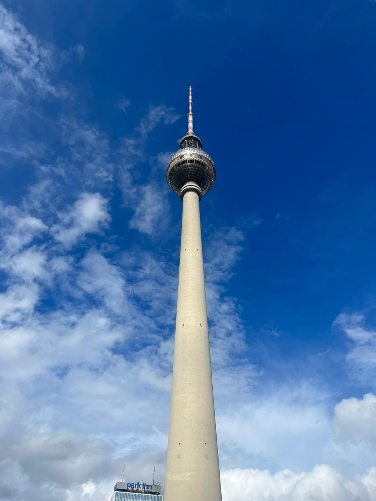
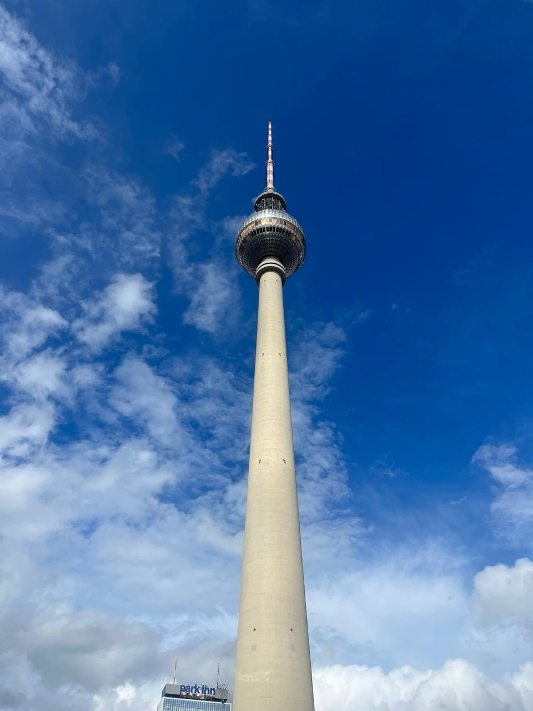

Minhas Aventuras pelo Mundo
Olá, eu sou a Manu! Criadora deste espaço onde compartilho minhas paixões por viagens, culturas diferentes e momentos inesquecíveis. Desde pequena sempre tive o sonho de conhecer o mundo, e aqui registro cada passo dessa jornada.
Este blog nasceu para inspirar outras pessoas a explorarem novos lugares, mesmo que seja na cidade vizinha. Acredito que cada viagem, seja grande ou pequena, nos transforma de alguma forma.
✨ Destaques das Minhas Viagens ✨
Meus Quinze Anos na Europa
Uma experiência transformadora onde pude viver como uma local na Alemanha por um mês inteiro, seguido por uma semana mágica em Paris. Desde aprender algumas palavras em alemão até me perder nas charmosas ruas de Montmartre - cada dia foi uma nova descoberta!
Família e Praias na Bahia
Nada melhor do que unir família e praias paradisíacas! Nesta viagem exploramos a riqueza cultural de Salvador, com seu Pelourinho cheio de história, e depois relaxamos nas águas cristalinas de Morro de São Paulo. Celebrar o Natal com direito a praia foi inesquecível!
Aventura em Balneário Camboriú com a Escola
Minha primeira viagem sem a família, mas cercada de amigos que se tornaram como uma. Conhecemos os pontos turísticos da cidade, nos divertimos muito na praia e criamos o grupo "Os Prota" que até hoje mantemos. Uma lição de independência e amizade!
Junte-se a Mim Nessa Jornada!
Seja você um viajante experiente ou alguém que ainda está planejando a primeira aventura, espero que encontre aqui inspiração e dicas úteis. Acompanhe cada postagem e deixe seus comentários - adoraria saber suas experiências também!
Com carinho,
Manu üåçüíú
 
